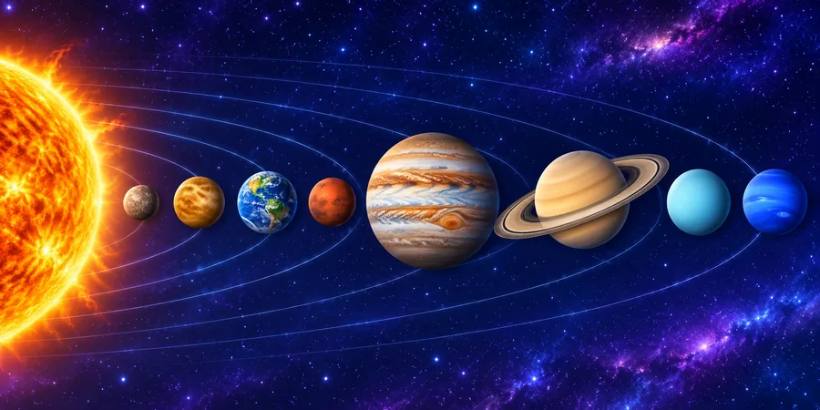

Những hành tinh trong Hệ Mặt Trời

Chạm để xem ảnh lớnBạn có bao giờ tự hỏi ngoài Trái Đất, quanh Mặt Trời còn có những hành tinh nào không?
Hệ Mặt Trời có tám hành tinh cùng quay quanh Mặt Trời theo những quỹ đạo riêng. Tính từ gần Mặt Trời ra xa là: Sao Thủy, Sao Kim, Trái Đất, Sao Hỏa, Sao Mộc, Sao Thổ, Sao Thiên Vương và Sao Hải Vương. Mỗi hành tinh có đặc điểm khác nhau. Trái Đất là nơi chúng ta sinh sống; Sao Mộc là hành tinh lớn nhất, còn Sao Thổ nổi bật với những vành đai rộng lớn. Tìm hiểu các hành tinh giúp chúng ta hiểu thêm về không gian bao la.
Cùng suy nghĩ nhé!
- Hãy kể tên tám hành tinh theo thứ tự từ gần Mặt Trời ra xa.
- Em muốn tìm hiểu thêm về hành tinh nào? Vì sao?
Điều thú vị
Sao Mộc lớn đến mức có thể chứa hơn 1.300 Trái Đất nếu chỉ so sánh thể tích.
Nguồn tham khảo: NASA Space Place – All About the Planets